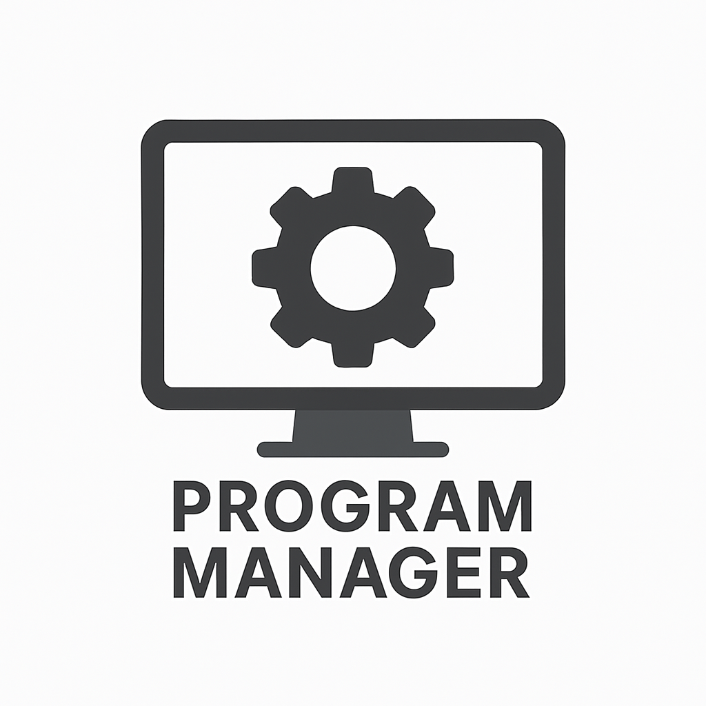

ДИСПЕТЧЕР ПРОГРАММУпорядочивайте приложения, игры и файлы в одном месте
Легко сортируйте программы, игры и файлы по категориям для быстрого доступа
Персонализируйте приложения с пользовательскими иконками
Отслеживайте, как часто и как долго вы используете каждое приложение
Переключайтесь между русским и английским в Настройках
Скачайте последнюю версию